From divine calling to regional impact: The story of how God established The Apostles' Church across Southern and Central Africa.
Isaac Kachada Chiumbu received a direct, face-to-face encounter with God while working underground at Etna mine in Zimbabwe. Like Moses before the burning bush or Saul on the road to Damascus, he was called without human mediation to expand the Mission of the Kingdom of Heaven in Southern and Central Africa.
This marked the birth of an authentic African endogenous church movement, rooted in the outpouring of the Holy Spirit and growing outside the imperialist Christian World Mission framework.
Reverend Samson Sibanda Kantini and his wife, Prophetess Sophia Mandhiyamba, received their divine commission under the leadership of Prophet Isaac Kachada Chiumbu.
Their mission: to lead the expansion of the Apostolic work north of the Zambezi River into present-day Zambia, Malawi, Mozambique, and the Democratic Republic of Congo.
The Kantini family became pioneering missionaries, carrying the authentic Gospel message beyond national borders.
The Mission took root and developed organically, following Biblical methods modeled in the Book of Acts while maintaining its foundation in Genesis.
In Zimbabwe: The work flourished through the pioneering efforts of Prophet Isaac Kachada Chiumbu and his brother, Reverend Levy Savvya Nyirenda Nyangamire.
In Zambia: The Mission expanded through the dedicated missionary work of the Kantini family and their associates.
The Apostolic message spread beyond Zimbabwe and Zambia to the wider Southern, Central, and Eastern African regions.
The movement maintained its distinctive character as an authentic African church, rooted in Biblical patterns rather than Western ecclesiastical structures.
Congregations multiplied as the Gospel was proclaimed as both a spiritual revolution and social transformation.
The Gospel proclaimed by Prophet Isaac Chiumbu was received as outright rebellion against:
The Mission established a unique identity as an African church born of the Spirit, not of missionary societies, adopting Biblical methods while contextualizing the Gospel for African realities.
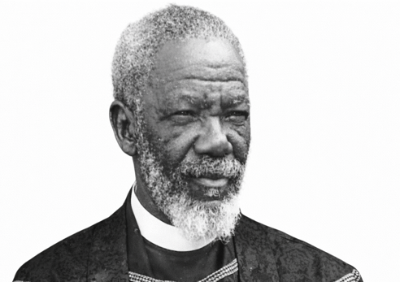
Received a direct divine encounter at Etna mine in 1916. Called to establish an authentic African church movement rooted in Biblical patterns and empowered by the Holy Spirit. His ministry laid the foundation for the expansion of the Apostolic work across Southern and Central Africa.
Commissioned in 1920 to lead expansion north of the Zambezi River. Established foundational work in Zambia and surrounding regions. His missionary journeys and leadership established congregations across multiple nations.
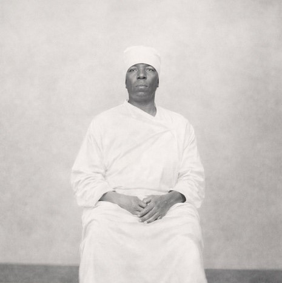
Partnered with her husband in pioneering missionary work. Provided spiritual leadership and prophetic ministry crucial to the Mission's early growth. Her spiritual gifts and wisdom guided the expansion of the church.
Younger brother of Prophet Chiumbu who assisted in establishing the foundational work in Zimbabwe. Played a key role in early leadership development and strengthening the church's presence in the region.
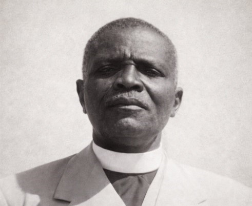
Succeeded Prophet Chiumbu as General Overseer. Continued the work of establishing and strengthening the church. His leadership period saw significant growth and organizational development.
Daughter of the Kantini family who continued the missionary legacy. Her prophetic ministry and leadership contributed significantly to the church's spiritual formation and growth.
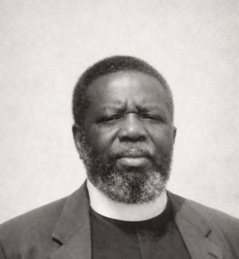
Led the church during a period of consolidation and expansion. His leadership emphasized faithfulness to the apostolic doctrine and continued missionary outreach.
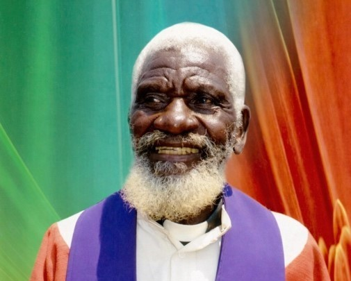
Son of the pioneering Kantini family. Continued the missionary vision and expanded the church's reach. His leadership strengthened the church's organizational structure.
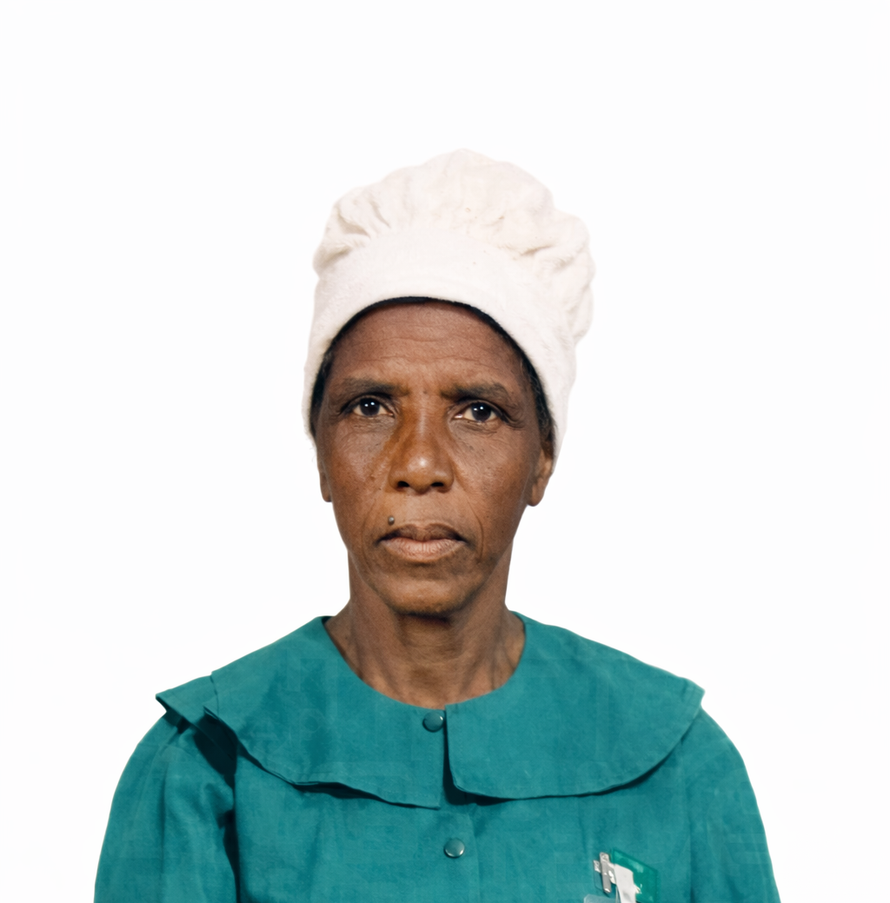
Partnered with her husband in ministry. Her spiritual leadership and prophetic gift blessed the church and guided its development. She was instrumental in women's ministry.
Pioneering missionary who worked alongside the Kantini family. His dedication to spreading the Gospel helped establish congregations in new territories.
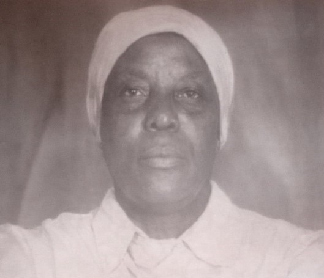
Daughter of the Kantini family who continued the missionary legacy with her husband. Her prophetic ministry blessed the church and strengthened the work.
Continued the Paradza family legacy of missionary service. His work helped maintain and expand the church's presence in established regions.
Daughter of the Kantini family who served alongside her husband. Her spiritual leadership and dedication to the apostolic vision strengthened the church.
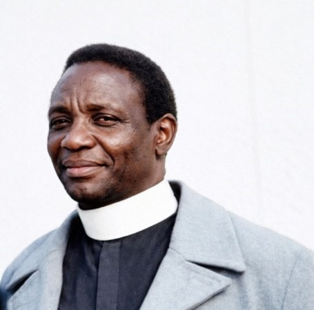
Led the church into the modern era while maintaining faithfulness to the apostolic foundation. His leadership emphasized both tradition and relevance in ministry.
Pioneered the Apostolic work in Southern Zambia. His dedication to spreading the Gospel established strong congregations that continue to thrive today.
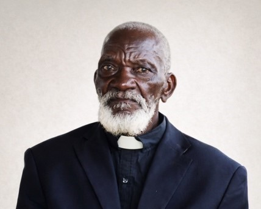
Contributed not only to church planting but also to the physical development of church infrastructure. His architectural skills helped build places of worship.
Partnered with her husband in ministry. Her prophetic gift and spiritual leadership contributed to the church's growth and spiritual formation.
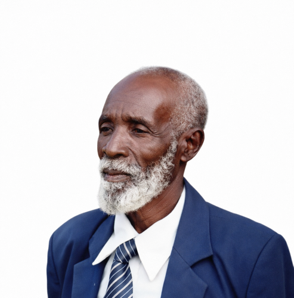
Faithful missionary who served alongside the pioneering families. His dedication to the apostolic vision helped establish the church in new areas.
Partnered with her husband in missionary work. Her spiritual gifts blessed the church and contributed to its spiritual depth and growth.
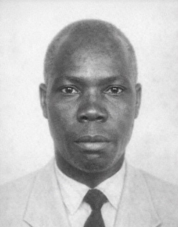
Faithful missionary who served in the expansion of the church. His dedication to the Gospel message helped establish congregations in new territories.
Pioneering missionary who worked alongside the Kantini family. His commitment to the apostolic vision helped establish the church's presence in new regions.
Daughter of the Kantini family who continued the missionary legacy with her husband. Her dedication helped maintain the church's growth and spiritual vitality.
For over a century, The Apostles' Church has maintained its commitment to authentic Biblical Christianity, contextual ministry, and Spirit-empowered transformation.
Join a church with a rich heritage of authentic faith, Spirit-empowered ministry, and commitment to Biblical truth.